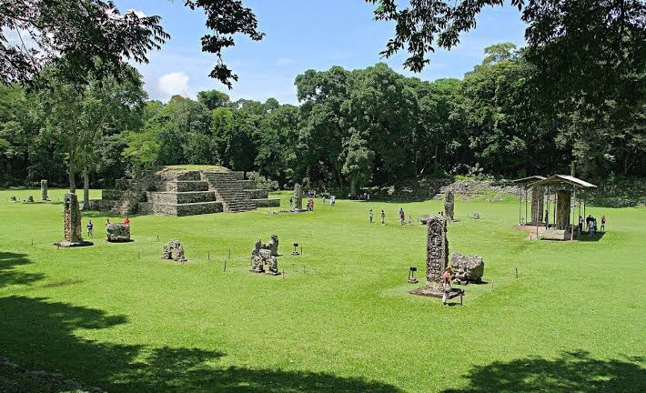
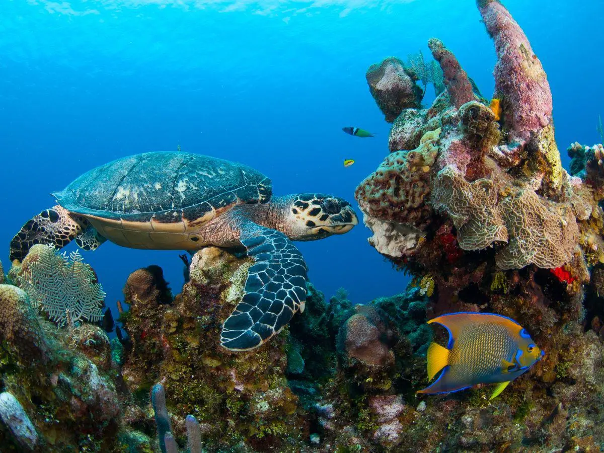

¡Bienvenidos a HonduTravel!
Siente el orgullo de explorar lo nuestro
El lugar donde podras planear tus próximas vacaciones mientras practicas turismo interno. Con HonduTravel podras reservar tours para poder explorar nuestra hermosa tierra de manera segura y divertida. En HonduTravel, conectamos a los viajeros con las maravillas naturales, parques nacionales y la vibrante cultura gastronómica de Honduras.Diseñamos tu próxima escapada para que planear tus vacaciones sea tan emocionante como vivirlas.
¡Tu Bucket List de Destinos!
Parque Arqueológico de Copán Ruinas

Copán fue la capital de un importante reino maya entre el siglo V y el Siglo IX. Por muchos años, Copán Ruinas ha tenido fama por sus magníficas ruinas mayas, declaradas por la UNESCO Patrimonio Arqueológico de la Humanidad en 1980. Hoy en día Copán Ruinas es considerada como el París del mundo Maya en Centroamérica. Visitala y conoce de la maravillosa historia del mundo Maya.
Reservar tourArrecife Coralino de Islas de la Bahía

Los arrecifes de coral de Honduras, que forman parte del Sistema Arrecifal Mesoamericano (SAM), están ubicados frente a la costa norte del país, en el mar Caribe.Esta estructura biogénica compleja no solo representa una maravilla geológica y biológica, sino también un eje vital para la resiliencia de los ecosistemas marinos del mar Caribe occidental. Visitalo y podras disfrutar de actividades como snorkeling, lanchas y ¡muchas mas!
Reservar tourParque Nacional Celaque

Declarado Parque Nacional en 1987 y Reserva de Biosfera en 2015, resguarda el bosque nublado más extenso de Honduras y el punto más alto del país. Cuenta con cinco rutas señalizadas, todas con salida desde el Centro de Visitantes. Desde una caminata de hora y media hasta el ascenso de dos días al Cerro Las Minas.
Reservar tourDatos sobre Honduras
Biodiversidad en Honduras
Honduras posee la biodiversidad mas grande de toda Centroamérica. Honduras cuenta con 70 ecosistemas vegetales, en ellos se han identificado 174 especies de plantas endémicas y muchas otras especies mas.
-
Hasta la fecha se han reportado:
- 229 especies de mamíferos (3 endémicos)
- 116 anfibios (38 endémicos)
- 211 especies de reptiles (27 endémicos)
- 688 especies de peces de agua dulce y salada
- 744 especies de aves (1 endémica)
Clima de Honduras
Por su posición geográfica y su orografia, la República de Honduras posee un clima muy variado.el cual es además influenciado por los siguientes cuerpos sinópticos:
- Anticiclón Subtropical del Atlántico
- Ondas tropicales
- Zona de Convergencia Intertropical
- Frentes Frios
Moneda de Honduras
La moneda oficial de Honduras es el Lempira, nombrado así en honor al cacique Lempira, héroe y prócer nacional de origen Maya-Lenca que con bravura defendió a su pueblo de la invasión española.En Honduras se utiliza actualmente las denominaciones en billetes de 1, 2, 5, 10, 20, 50, 100, 200 y 500 lempiras.
Ubicacion geografica
Situada en el centro de la región centroamericana, la República de Honduras es el segundo país más grande de la zona.Limita físicamente con tres países y dos océanos, pero paradójicamente ha sido uno de los países de la región tradicionalmente más aislados a causa de su compleja orografía. Con una superficie de 112,492 Kms2, Honduras limita: al oeste con Guatemala (340 kms) y El Salvador (356,5 kms), al norte con el Mar Caribe (650 kms), al este con Nicaragua (575 kms) y al sur con el Océano Pacífico (65 kms).